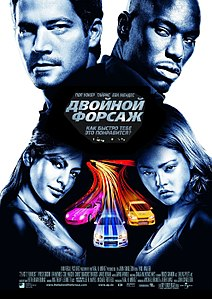

Двойной форсаж - американский боевик 2003 года, снятый Джоном Синглтоном по сценарию Майкла Брандта и Дерека Хааса по сюжету Брандта, Хааса и Гэри Скотта Томпсона. Продолжение фильма «Форсаж» (2001), вторая часть одноимённой франшизы, в которой Пол Уокер играет Брайана О'Коннера вместе с Тайризом Гибсоном и Евой Мендес. В фильме бывший офицер полиции Лос-Анджелеса Брайан О'Коннер и его друг Роман Пирс (Гибсон) работают под прикрытием для Таможенной службы США и ФБР, чтобы задержать наркобарона в обмен на стирание их судимостей.
Перехід на третю сторінку